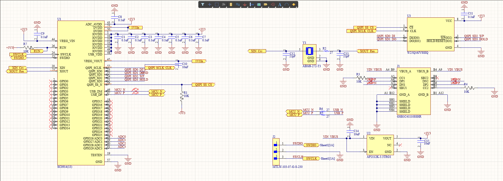
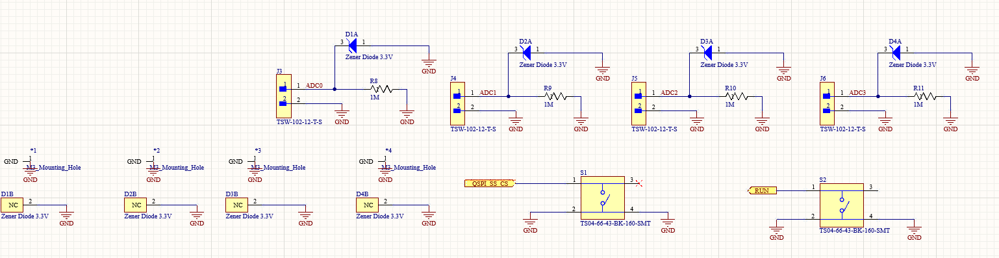
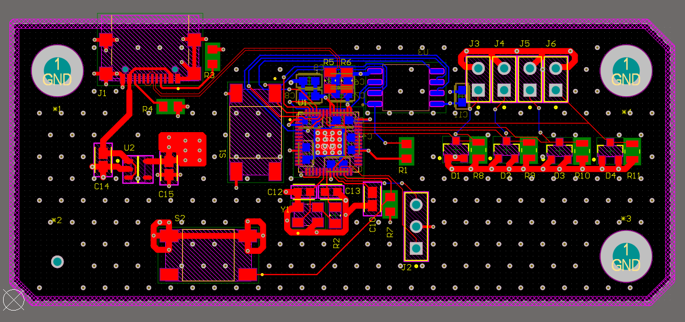
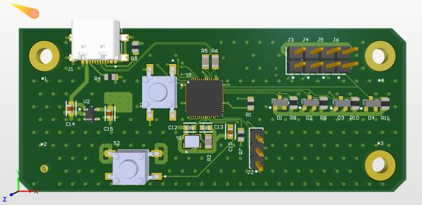
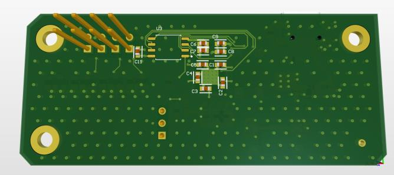

Custom HID Taiko Game Controller
A custom game controller based on the RP2040 microcontroller that translates physical drum strikes detected by piezoelectric shock sensors into digital USB-HID inputs for high-precision rhythm gameplay.
Why I Built This
Commercial Taiko controllers are expensive and lack customization for competitive play. I wanted to design one from scratch to get hands-on experience with the full hardware lifecycle — from selecting a microcontroller and designing input-protection circuits around real-world sensor behavior, to routing a USB-compliant PCB and preparing it for fabrication. The project forced me to solve real analog-to-digital challenges: conditioning unpredictable piezo spikes into clean ADC reads, and ensuring the USB differential pairs met impedance targets for reliable HID communication.
Hardware Summary
A purpose-built USB game controller that converts analog piezoelectric drum strikes into low-latency digital inputs. The design pairs an RP2040 MCU with a robust input-protection front-end and a USB-C HID interface, all captured in a compact 2-layer PCB designed for reliable fabrication.
Hardware Architecture & Schematic Design
- Microcontroller: Integrated an RP2040 with external QSPI flash memory.
- Input Protection: Conditioned high-voltage piezo spikes using 3.3V Zener diodes and 1MΩ pull-down resistors to protect the ADC pins.
- Power & Interface: Implemented USB-C (with 5.1kΩ CC pull-downs) and regulated 5V to 3.3V via an AP2112K LDO.


PCB Layout & DFM (Altium Designer)
- Signal Integrity: Routed impedance-controlled USB differential pairs (D+/D-) to ensure signal integrity between the MCU and the host PC.
- Power Delivery: Minimized parasitic inductance by clustering decoupling capacitors directly beneath the RP2040.
- Manufacturing: Cleared complex DRCs and tailored component footprints to ensure reliable manufacturing.



Next Steps
- Component assembly and stencil-assisted SMD reflow
- Bootloader flashing and bring-up testing
- Developing interrupt-driven C/C++ firmware for the USB-HID stack